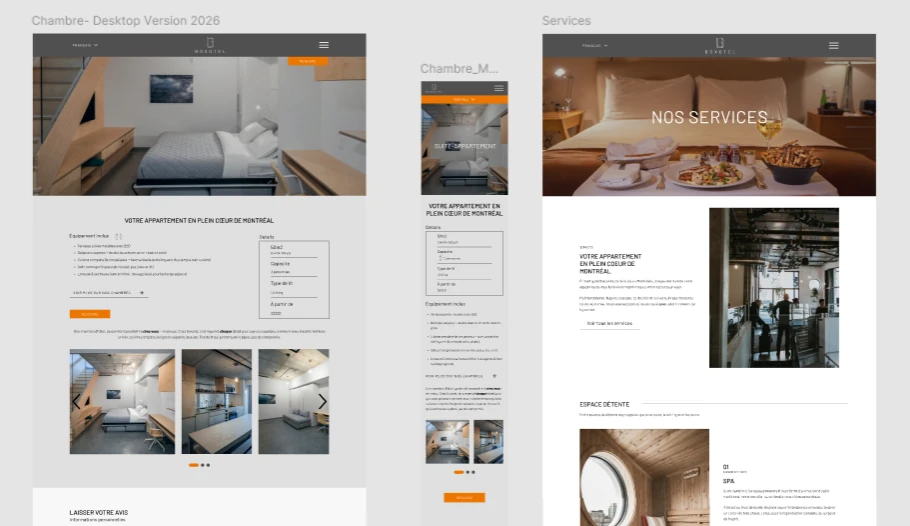
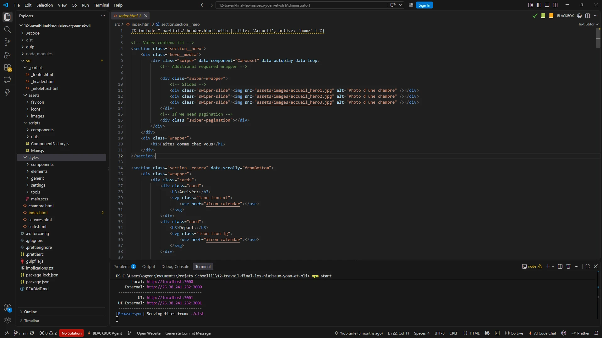
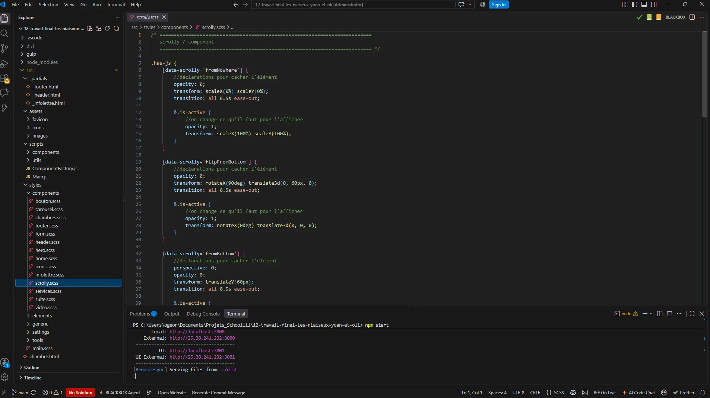
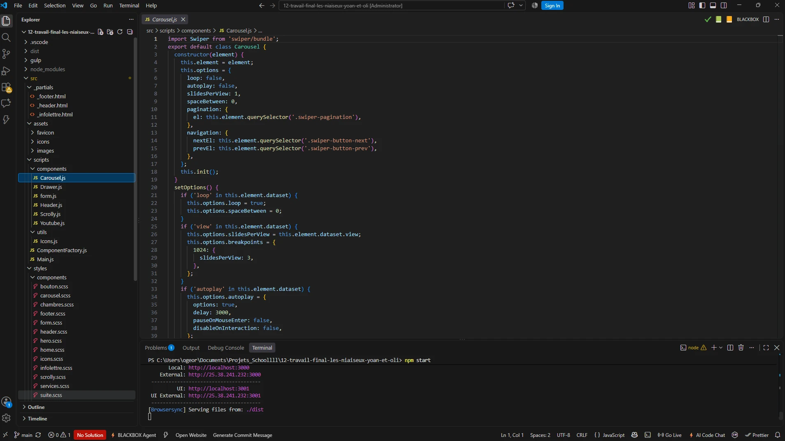

01
Tournage
Premièrement, j’ai filmé la scène réelle dans laquelle le robot allait apparaître.
Olivier Georges
000%
Le robot est un projet de réalité augmentée conçu avec Blender . J’ai modélisé et animé un robot, puis je l’ai intégré dans une vraie vidéo filmée , avec un éclairage et un environnement adaptés au décor.
Modélisateur et animateur 3D - Seul - Projet scolaire - 2025
Voir le projet

Le projet Le robot était un [travail pratique (TP2)] dans le cadre du cours [nom du cours]. Le but était de modéliser et d’ animer un robot dans Blender , puis de l’ intégrer de façon crédible dans une vidéo réelle . Le plus important était de faire croire que le robot faisait vraiment partie de la scène filmée.
Modélisateur et animateur 3D . J’ai réalisé toutes les étapes du projet : le tournage , le suivi de caméra , la modélisation , l’ animation , l’ éclairage , le rendu et le montage final.
Dans ce projet, l’IA n’a pas été utilisée . Les modèles, les visuels et les sons proviennent de ma créativité et des apprentissages effectués pendant le cours.

Premièrement, j’ai filmé la scène réelle dans laquelle le robot allait apparaître.

Deuxièmement, j’ai découpé la vidéo en images et fait le suivi de caméra (camera tracking) dans Blender pour que la caméra 3D suive exactement les mouvements du téléphone.

Troisièmement, j’ai modélisé le robot et créé ses matériaux .

Quatrièmement, j’ai animé le robot et reproduit l’ éclairage de la scène réelle pour que les ombres et les reflets soient crédibles.

Dernièrement, le rendu , la composition du robot sur la vidéo et l’ exportation finale avec Adobe Media Encoder.
Utiliser le suivi de caméra de Blender avec des points de repère bien contrastés dans la vidéo.
Observer la direction et la couleur de la lumière réelle, puis l’imiter dans Blender.
Ajouter un plan invisible au sol qui reçoit seulement les ombres du robot.
En conclusion, Le robot m’a permis de toucher à toute la chaîne de production d’un effet visuel : du tournage à l’ intégration finale. Ce projet m’a appris à porter attention aux petits détails , comme la lumière et les ombres , qui rendent un objet 3D crédible dans le monde réel.
Retourner aux projets
Projet Le robot
Dans ce projet, l’IA n’a pas été utilisée .
Le tournage, le suivi de caméra, la modélisation, l’animation, l’éclairage et le montage ont entièrement été faits par moi.
Les modèles, les visuels et les sons proviennent de ma créativité et des apprentissages faits pendant le cours.
Cette partie concerne seulement la page de présentation que vous lisez, pas le projet lui-même.
L’IA Claude (Anthropic) m’a aidé à rédiger et à corriger les textes de présentation à partir de mes notes.
Elle a écrit les textes alternatifs (alt) des images pour l’accessibilité.
Elle a ajusté l’affichage de la page sur mobile, comme les icônes des outils utilisés.
Modélisation, animation et intégration : Olivier Georges
Logiciels : Blender et Adobe Media Encoder
Projet scolaire réalisé en 2025, sans but commercial.